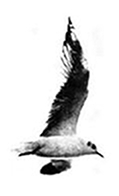

Обращение Кавказского Центра
Миротворческих Инициатив
ВОВЛЕЧЕННЫМ В КОНФЛИКТ ГРАЖДАНАМ
- Отрицая современные принципы добрососедства и сосуществования в процессе урегулирования карабахского конфликта, и трансформируя существующую проблему в углубляющееся армяно-азербайджанское противостояние,
- Отдавая дань преступной политической формулировке “Война или Мир” и допуская безальтернативность общественного выбора между войной и миром,
- Подчиняя приоритет конкуренции политических программ, приоритет общественного диалога - “поэтапно-пакетному” битью в баклуши,
на пороге второго десятилетия противостояния констатируем политическое банкротство и явные вызовы ожидаемых угроз.
Мы, вовлеченные в конфликтную зону граждане, армяне и азербайджанцы:
- Смирившись с обыгрыванием “неготовности обществ” и оправданием этой тупиковой ситуации “недостаточностью демократических преобразований”,
- Предав забвению общеизвестную истину “Коррупция внутри страны и агрессия из вне - для прикрытия коррупции”,
- Приспособившись к отчуждению фундаментальных прав и свобод человека, к постоянной фальсификации выборов,
в статусе немых свидетелей продолжаем покровительствовать безрезультатным политическим процессам и гражданским имитациям, и в результате не только расплачиваемся застоем в наших обществах, бедственным положением каждого из нас, без исключения, но и поощряем возобновление войны.
Георгий Ванян
председатель КЦМИ
28-02-06
- Отдавая дань преступной политической формулировке “Война или Мир” и допуская безальтернативность общественного выбора между войной и миром,
- Подчиняя приоритет конкуренции политических программ, приоритет общественного диалога - “поэтапно-пакетному” битью в баклуши,
на пороге второго десятилетия противостояния констатируем политическое банкротство и явные вызовы ожидаемых угроз.
Мы, вовлеченные в конфликтную зону граждане, армяне и азербайджанцы:
- Смирившись с обыгрыванием “неготовности обществ” и оправданием этой тупиковой ситуации “недостаточностью демократических преобразований”,
- Предав забвению общеизвестную истину “Коррупция внутри страны и агрессия из вне - для прикрытия коррупции”,
- Приспособившись к отчуждению фундаментальных прав и свобод человека, к постоянной фальсификации выборов,
в статусе немых свидетелей продолжаем покровительствовать безрезультатным политическим процессам и гражданским имитациям, и в результате не только расплачиваемся застоем в наших обществах, бедственным положением каждого из нас, без исключения, но и поощряем возобновление войны.
Георгий Ванян
председатель КЦМИ
28-02-06